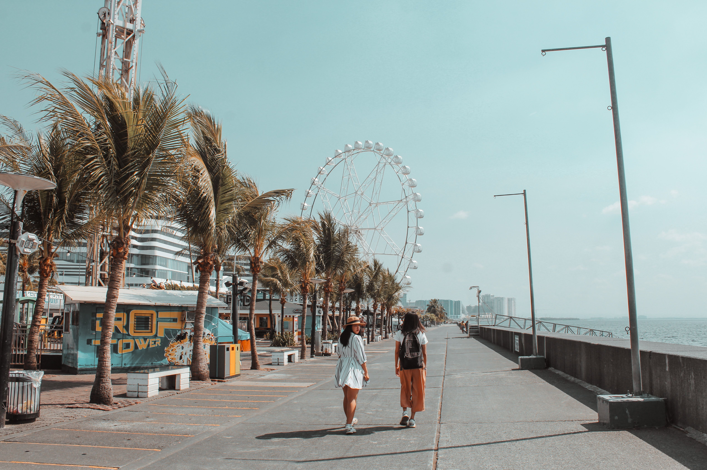

Palawan
Palawan, Philippines
I recommend Palawan because of its crystal-clear waters, beautiful beaches, and breathtaking natural scenery. It is a perfect destination for relaxation and adventure.

A student-friendly guide to reliable print shops near the Technological University of the Philippines. This guide helps students find convenient and affordable places for printing documents, projects, reviewers, and other school requirements.
Hello! I'm Champaigne Escultura, a BTLED-ICT student at the Technological University of the Philippines. As a student who often prints assignments and projects, I created this guide to help fellow students find nearby print shops that offer quality service at reasonable prices.

Palawan, Philippines
I recommend Palawan because of its crystal-clear waters, beautiful beaches, and breathtaking natural scenery. It is a perfect destination for relaxation and adventure.
Benguet, Philippines
I recommend Baguio City because of its cool climate, scenic parks, and fresh local produce. It is a great place to relax and enjoy nature.

Pasay City, Philippines
I recommend SM Mall of Asia because it offers a wide variety of shops, restaurants, entertainment, and a beautiful view of Manila Bay.
